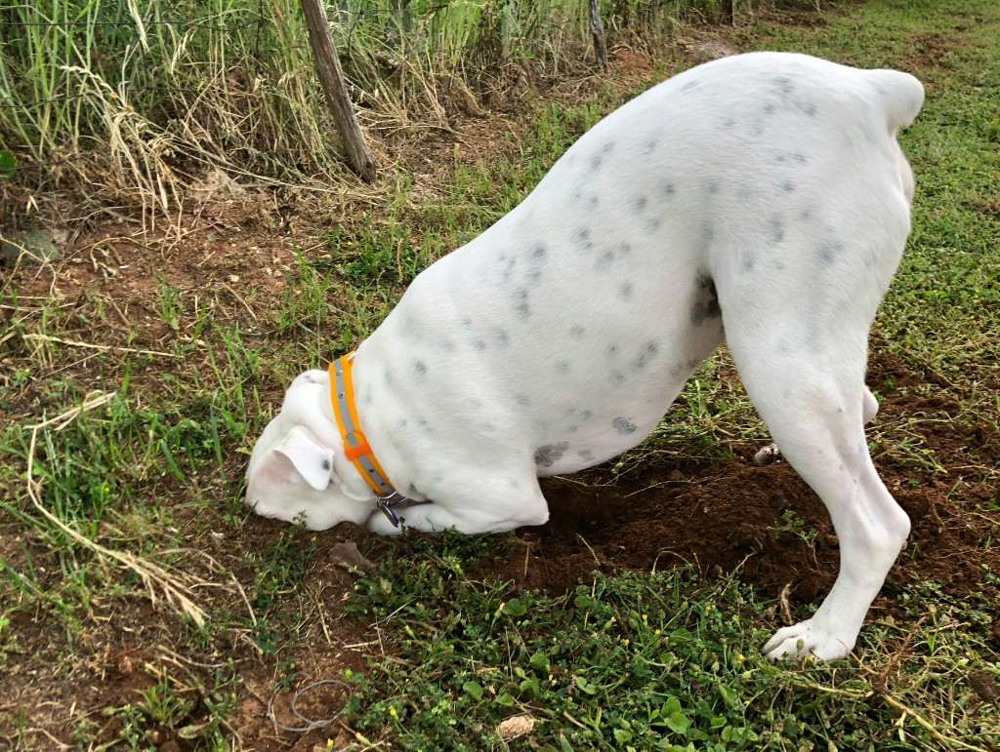

Episode 53 · July 21, 2026 · 1770
Does your dog destroy your yard or house when you’re not there?

About This Episode
In this episode we talk about dogs destroying yards and homes when the owner is not home or watching. We go over ways to try to change habits and ways to protect your dog from hurting itself or destroying property. Enjoy!
Questions about the training topics in this episode? Tyce works with bird dog owners and hunters through Utah Bird Dog Training. Reach out to work with him directly.
Resources & Links
- The Gunshy Fix — Sound conditioning program for gunshy dogs.
- Kuranda Dog Beds — Elevated, chew-proof dog beds.
- Utah Bird Dog Training — Tyce's professional training services.
Transcript
Full transcript for Episode 53: Does your dog destroy your yard or house when you’re not there?.
Tyce
Hey everyone, welcome to the Bird Dog Podcast. My name is Tyce. Today I want to talk about a topic that comes up a lot, especially with high-drive hunting dogs: destructive behavior when you're not home. Chewing, digging, tearing things up, barking nonstop — this is something a lot of dog owners deal with and it can be genuinely frustrating. Let's talk about where it comes from and what you can do about it.
The first thing to understand is that destructive behavior when you're gone is almost always rooted in one of two things: excess energy or anxiety. A dog with too much physical and mental energy and nowhere to put it will find something to do — and what it finds usually isn't what you'd choose. A dog with separation anxiety is in a different state entirely — it's not bored, it's stressed, and the destruction is a symptom of that stress. The solutions are different for each, so figuring out which you're dealing with matters.
For the high-energy dog that tears things up out of boredom: the answer is exercise and mental work before you leave. A dog that's been run, worked, or trained in the morning is a different dog than one that's been sitting in the kennel since 6 PM the night before. Hunting dogs especially are built to move and think. If they don't get that outlet, the energy goes somewhere. Morning training, a long run, a structured retrieve session — any of that burns the edge off and gives you a calmer dog for the rest of the day. On days you can't do a full session, even 15 minutes of obedience work is surprisingly effective. Mental work tires dogs faster than physical work alone.
Crating is your friend for times when you can't supervise. A crate is not punishment — it's a management tool that keeps the dog safe and keeps your house intact. A dog that's been properly crate conditioned will go in voluntarily and rest. The key is doing the conditioning work so the crate is a positive, comfortable space. If your dog panics when crated, that's the anxiety version of this problem and you need to address it differently — but most dogs will accept and eventually prefer a crate if it's introduced correctly.
For anxiety-based destruction, the approach is gradual desensitization. Start by leaving for just a few minutes, then return before the dog gets stressed. Build the duration slowly. A dog that gets anxious the moment you pick up your keys needs to learn that those departure signals don't always mean a long absence. You can also work on the "place" command — a dog that knows how to hold a place position and has been conditioned to relax there is easier to leave because it has a default behavior to fall back on. If the anxiety is severe, working with a trainer and potentially your vet on a structured plan is worth it. Some dogs genuinely need more help than routine exercise and management can provide. Thanks for listening.
About the Host
Tyce Erickson
Tyce Erickson is a professional bird dog trainer and the owner of Utah Bird Dog Training in Utah. For nearly two decades he has worked with pointing dogs, retrievers, and family hunting dogs — helping owners build dogs that are capable and enjoyable in the field. The Bird Dog Podcast is an extension of that work: honest conversations on training, hunting, breeding, and everything that goes into a life spent working dogs.
More About Tyce